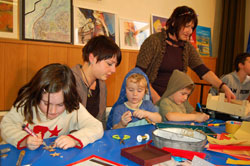
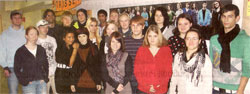
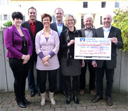
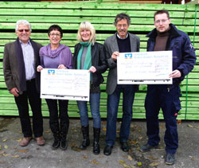
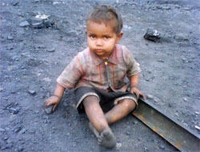
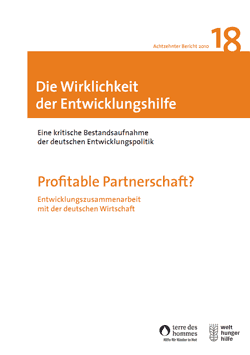

|
Dienstag, 30. November 2010 |
10.000 € Reinerlös beim 30. Herbstbasar in Kuppenheim
Vielfältiges Programm lud Gross und Klein zum Verweilen ein
|
Die Wörtelhalle in Kuppenheim glich am Sonntag einem orientalischen Basar, auf dem reges Treiben herrschte. Zahlreiche kleine und große Besucher aus Kuppenheim und den umliegenden Gemeinden waren gekommen, um beim „30. Herbstbasar“ der terre des hommes Arbeitsgruppe Murgtal/Mittelbaden einige gemütliche Stunden zu verbringen und das eine oder andere Weihnachtsgeschenk einzukaufen.
Zum Pressebericht |
Montag, 29. November 2010 |
Was Jugendliche im Murgtal bewegt
„New Generation": Buchprojekt von Schülern der Handelslehranstalt Gernsbach
|
Wer Einblick nehmen möchte in die Gefühlswelt von Jugendlichen, wer wissen will, was sie fühlen, denken, erhoffen und sich erträumen, und wer zudem noch einen Beitrag für die Flutopfer in Pakistan leisten möchte, der kann dies mit dem Erwerb der Lektüre „New Generation: Was Jugendliche im Murgtal bewegt". Die Idee zu diesem Buch wurde in der Handelslehranstalt Gernsbach geboren, genauer gesagt in der Klasse 2BFW1/2 von Fachlehrer Martin Strauß.
Zwanzig engagierte 16- bis 18-jährige Hauptschüler besuchen diese Klasse mit dem Ziel, den Realschulabschluss im Rahmen einer zweijährigen kaufmännischen Ausbildung zu erwerben. Für die anstehende Projektarbeit unterbreitete Strauß den ehrgeizigen Vorschlag des gemeinsamen Buchprojekts. „Wir wollten etwas Besonderes machen", sagte Strauß, „ein soziales Projekt, das wir als Wettbewerbsbeitrag beim Landeswettbewerb „Berufliche Bildung" mit der Aussicht auf einen „beo"- den Oskar der beruflichen Bildung" einreichen können".
Verkaufserlös für Flutopfer in Pakistan und Afghanistan
|
 |
| Ein ehrgeiziges Buchprojekt haben Schüler der HLA Gernsbach zusammen mit Ihrem Lehrer Martin Strauß (links) auf die Beine gestellt. „New Generation" zeigt, was Jugendliche im Murgtal bewegt. Mit der Projektarbeit bewirbt sich die Klasse beim Landeswettbewerb „Berufliche Bildung". Foto: Susanne Dürr |
Die Idee vom selbst verlegten Buch für einen guten Zweck begeisterte alle Schüler. Eine Geschichte von einem Mindestumfang von 40 Seiten abzuliefern, trauten sich jedoch nur zwölf Schüler zu. So blieben noch acht Schüler übrig, die wichtige Aufgaben im Marketing, Vertrieb, Layout, Pressearbeit und Organisation der Lesungen übernahmen. Jannick Hinkelmann und Gerhard Ilinzer übernahmen die Sponsorenarbeit. Zwölf Firmen erklärten sich zum Mitmachen bereit, druckten Plakate und schalteten Anzeigen im Buch. Die Einnahmen aus dem Buchverkauf fließen an das Kinderhilfswerk „terre des hommes" zurück, das den Druck vorfinanziert hat. Mit dem Gewinn soll die Notfallhilfe der Organisation für die Opfer der Flutkatastrophe in Pakistan/Afghanistan unterstützt werden. Der Druck der Erstauflage mit 350 Exemplaren kostete 3 000 Euro.
Die teilweise fantasievollen, teilweise hart an der Realität erzählten Lesegeschichten der Schüler, gehen unter die Haut. Zu den Themen des Buchs „Das Leben ist kein Ponyhof", nahm ein Mädchen im BNN-Gespräch Stellung. Da geht es um Drogen oder um die Scheidung der Eltern. In „Ein Augenblick, an dem das Leben ein Ende nahm", arbeitet eine Schülerin mutig die traumatische Zeit nach einer Vergewaltigung auf, der sie nur knapp entkommen konnte. Der in Karlsruhe geborene pakistanische Schüler Toseef Ullah, unternimmt mit seinem Reisebericht „Die Reise nach Nirgendwo" den gelungenen Versuch, dem Leser die Schönheit seines Heimatlands Pakistan näher zu bringen. Zwischen den Zeilen lesen muss man bei einigen Geschichten, die scheinbar Erfundenes zu Papier bringen. Es geht um die Suche nach Liebe und Freundschaft, nach Geborgenheit, Heimat oder dem Verständnis der Eltern. Die Schüler schrieben Geschichten, die sich nicht am Kaffeetisch erzählen lassen, sondern die gelesen werden müssen.
Weitere Informationen zu diesem Buch:
- Autoren & Mitwirkende: Alessandra Venditti, Alina Herfurth, Franziska Kafka, Giulia Paolone, Jasmin Girrbach, Kristin Heck, Marcel Bittmann, Michelle Christin Weis, Michele Chinzi, Patricia Fritz, Saskia Herold, Toseef Ullah
- Layout: Derya Salar, Renate Götzmann
- Werbung: Yannick Hinkelmann, Gerhard Uinzer, Nazli Kaya
- Redaktion: Martin Strauß, Beate Lacher
- Druckerei: BadnerBuch-Verlag GbR, Rastatt
- Umschlagbild: Stefan Kaminski, Gernsbach
- ISBN: 978-3-00-031947-1
- Preis: 14,95 €
- Unterstützer: Förderverein Freunde der HLA Gernsbach und terre des hommes Murgtal/Mittelbaden
- Sponsoren: Glatfelder Gernsbach GmbH & Co. KG, Sparkasse Rastatt-Gernsbach, Volksbank Baden-Baden Rastatt eG, A & U Fashion Gaggenau, Bäckerei Liedtke Gaggenau-Bad Rotenfels, Fahrschule Zehner Gaggenau Gernsbach, Zum Schwarzen Adler Forbach, maxx ! Gesundheitszentrum Gaggenau, Restaurant & Pizzeria Pfeffermühle Gaggenau, R. Kohlhauer GmbH Gaggenau, BadnerBuch-Verlag Rastatt
|
Freitag, 19. November 2010 |
Axa-Vertretung Kuppenheim spendet 1.500 Euro für Flutopfer in Pakistan
Kindern und Jugendlichen in Pakistan Zukunft geben
|
|
 |
| Spenden seit mehr als 10 Jahren für terre des hommes: Richard Kolb (rechts) und sein Team an die AG Murgtal/Mittelbaden (Sprecher Heinz Wolf, zweiter von rechts). |
„Die Unterstützung von Firmen, Geschäftsleuten und Institutionen aus der Region ist eine unserer vier Säulen“, so Heinz Wolf, Sprecher der rührigen Arbeitsgruppe terre des hommes Murgtal/Mittelbaden. So kommen jedes Jahr etwa 20.000 € von 80 bis 100 Sponsoren und Spendern aus dem wirtschaftlichen Mittelstand zusammen.
Die Sponsoren wie Richard Kolb und sein Team schätzen an terre des hommes die effektive und nachhaltige Arbeit mit einem geringen Verwaltungsaufwand. Positiv zieht Kolb auch das Engagement der örtlichen Arbeitsgruppe, die mit Kinderfesten, Basaren, Radbörsen und Konzerten dem Publikum etwas bietet, um über diesen Weg stattliche Spendensummen und Aktionserlöse zusammenzutragen.
In diesem Jahr spendete die Axa-Vertretung Kuppenheim 1.500 Euro für jugendliche Flutopfer in Pakistan, um neben der Soforthilfe auch Unterstützung zum schulischen und beruflichen Leben zu erhalten, eine Hilfe zur Selbsthilfe, die terre des hommes mit einheimischen Kräften bewerkstelligt. In den vergangenen Jahren übergab das Axa-Team insgesamt 7.900 Euro an terre des hommes für Kinder- und Jugendprojekte. |
Freitag, 19. November 2010 |
Bundesweite terre des hommes-Aktion »Straßenkind für einen Tag«
Schirmherrin ist TV-Moderatorin Barbara Schöneberger
|
Mit der Aktion »Straßenkind für einen Tag« setzen sich zum Jahrestag der Verabschiedung der UN-Kinderrechtskonvention rund 2.000 Kinder in mehr als 50 Städten Deutschlands für die Rechte ihrer Altersgenossen ein. Am 20. November 1989 hatte die Generalversammlung der Vereinten Nationen die UN-Konvention über die Rechte des Kindes verabschiedet. In Deutschland machen in jedem Jahr aus diesem Anlass Kinder und Jugendliche darauf aufmerksam, dass entgegen den Bestimmungen dieser Konvention die Kinderrechte weltweit verletzt werden.
Im Mittelpunkt der Aktion stehen diesmal die Auswirkungen der globalen Finanz- und Wirtschaftskrise. Schätzungen zufolge hat die Krise in rund 40 Prozent aller Entwicklungsländer die Armut verschärft. Befürchtet wird, dass bis 2015 aufgrund der Folgen der Krise bis zu 400.000 Säuglinge und Kinder zusätzlich sterben, weil ausreichende Nahrung und sauberes Wasser fehlen. Untersuchungen der Internationalen Arbeitsorganisation ILO zufolge stieg die Zahl arbeitender Kinder allein in Lateinamerika aufgrund der Krise um bis zu eine halbe Million. »Nicht nur systemrelevante Einrichtungen wie Banken brauchen einen Schutzschirm, sondern vor allem die Opfer der vom globalen Casinokapitalismus verursachten Krise. Dringend erforderlich sind deshalb Programme, mit denen diese Kinder aufgefangen werden und die ihnen Versorgung und Schulbildung ermöglichen. Das ist eine Anforderung an die Regierungen in Nord und Süd, ihrer Pflicht gegenüber den schwächsten Mitgliedern der Gesellschaft nachzukommen«, erklärte Ursula Pattberg, Vorsitzende von terre des hommes.
terre des hommes-Botschafterin Barbara Schöneberger, Schirmherrin der Aktion, erklärte: »Mir gefällt, dass so viele Schülerinnen und Schüler mit ihrer Aktion auf die Nöte und Bedürfnisse von Kindern aufmerksam machen und dies auch im Schulunterricht Thema ist. So erfahren und erspüren sie sehr direkt, wie es Kindern auf der Straße und arbeitenden Kindern geht. Durch praktizierte Solidarität und das Sammeln von Spenden bauen sie mit an einem Schutzschirm, den terre des hommes armen Kindern aufspannt.«
erre des hommes fördert Straßenkinder-Projekte in Afrika, Asien, Lateinamerika und Deutschland. In Schutzzentren erhalten Kinder und Jugendliche Essen, medizinische Versorgung und Hilfe beim Einstieg in Schule oder Ausbildung.
Weitere Informationen:
|
Donnerstag, 18. November 2010 |
„New Generation": Was Jugendliche im Murgtal bewegt
Buchprojekt einer Klasse der Handelslehranstalt Gernsbach eignet sich als Weihnachtsgeschenk / Erlös geht nach Pakistan
|
Am Anfang stand die Idee von Fachlehrer Martin Strauß: „Was haltet ihr davon, ein Buch zu schreiben, es drucken zu lassen, Sponsoren zu rekrutieren und den Verkauf zu organisieren?" Die Frage ging im November 2009 an 20 Schüler der Klasse 2BFW1/2 der Handelslehranstalt (HLA) Gernsbach. Man könne mit einem derartig komplexen Gemeinschaftsprojekt beim Landeswettbewerb „Berufliche Bildung" mitmachen und vielleicht als Preisträger daraus hervorgehen, warb Strauß.
„Die Begeisterung war groß", berichtet er jetzt im BT-Gespräch. Inhaltlich sollte jeder Schüler selbst entscheiden, worüber er oder sie sich schriftlich auslassen wolle. Im November 2009 begannen die 16 bis 19 Jahre alten Jungautoren mit ersten schriftlichen Versuchen über sich, ihr Umfeld, ihre Erfahrungen, Erlebnisse und Beobachtungen. Von den 20 Schülern der Klasse blieben für eine zweite Etappe zwölf dabei. Sie fanden Spaß und Freude am Schreiben, die acht anderen kümmerten sich um alle weiteren wichtigen Schritte zum Ziel - der Herausgabe eines eigenen Buchs.
Yannik Hinkelmann und Gerhard Ilinzer übernahmen es, bei 30 Firmen aus der Region wegen finanziellen Sponsorings vorzusprechen. Das jeweilige Unternehmen sollte im Buch mit einer Anzeige werben, wodurch Geld für den Druck eingehen sollte. „Wir hatten Erfolg, zwölf Firmen erklärten sich zum Mitmachen bereit", berichtet Yannik Hinkelmann. Nach anfänglicher Scheu lief es ganz gut: „Wir fühlten uns keineswegs als Bettler." Es wurde ein Unternehmen aus Gernsbach gefunden, das Plakate in verschiedenen Größen drucken ließ. Die Buchhaltung übernahm Francesca Büß, 350 Exemplare als erste Auflage wurden zu einem Gesamtpreis von 3 500 Euro gedruckt.
|
|
| Gemeinschaftsleistung: Die Klasse 2BFW1/2 der Handelslehranstalt Gernsbach bringt ein Buch heraus. |
„New Generation" lautet der Titel, mit dem eine Klasse in vielen Geschichten mit grenzenloser Fantasie kundtut, „was uns Jugendliche im Murgtal bewegt". Erstmals zum Verkauf kam das Buch am 2. Oktober im Landratsamt Rastatt, als man das 100-jährige Bestehen der Handelslehranstalt feierte. In Buchhandlungen liegt das Buch zum Verkauf aus. Man wird auch bei regionalen Weihnachtsmärkten mit einem Verkaufsstand präsent sein. Am 9. Dezember wird es ab 19 Uhr eine Lesung im Gernsbacher Fotostudio Kaminski geben. Bisher hat man 114 Bücher verkaufen können. Es stehen also noch genügend Exemplare zur Verfügung, wodurch der Käufer nicht nur sich selbst oder anderen eine Freude bereiten kann mit überraschenden, interessanten, vielfältigen Einblicken in das Gefühlsleben von Jugendlichen im Murgtal.
Ein Betrag von mindestens 700 Euro will die Klasse an „terre des hommes Murgtal" spenden mit dem Ziel, damit Flutopfern in Pakistan zu helfen. Die Spendenübergabe ist noch vor Weihnachten vorgesehen.
Weitere Informationen zu diesem Buch:
- Autoren & Mitwirkende: Alessandra Venditti, Alina Herfurth, Franziska Kafka, Giulia Paolone, Jasmin Girrbach, Kristin Heck, Marcel Bittmann, Michelle Christin Weis, Michele Chinzi, Patricia Fritz, Saskia Herold, Toseef Ullah
- Layout: Derya Salar, Renate Götzmann
- Werbung: Yannick Hinkelmann, Gerhard Uinzer, Nazli Kaya
- Redaktion: Martin Strauß, Beate Lacher
- Druckerei: BadnerBuch-Verlag GbR, Rastatt
- Umschlagbild: Stefan Kaminski, Gernsbach
- ISBN: 978-3-00-031947-1
- Preis: 14,95 €
- Unterstützer: Förderverein Freunde der HLA Gernsbach und terre des hommes Murgtal/Mittelbaden
- Sponsoren: Glatfelder Gernsbach GmbH & Co. KG, Sparkasse Rastatt-Gernsbach, Volksbank Baden-Baden Rastatt eG, A & U Fashion Gaggenau, Bäckerei Liedtke Gaggenau-Bad Rotenfels, Fahrschule Zehner Gaggenau Gernsbach, Zum Schwarzen Adler Forbach, maxx ! Gesundheitszentrum Gaggenau, Restaurant & Pizzeria Pfeffermühle Gaggenau, R. Kohlhauer GmbH Gaggenau, BadnerBuch-Verlag Rastatt
|
Freitag, 12. November 2010 |
Holzbau- und Rollladenbau Hurrle: Seit 10 Jahren Unterstützung aus Gaggenau
|
|
 |
| Von links nach rechts: Heinz Wolf (Sprecher tdh-Arbeitsgruppe Murgtal), Ulrike Dinger (Holzbau Hurrle), Barbara Wachsmuth und Eugen Franke von tdh, Jens Tschirner (Rollladenbau Hurrle) |
Seit nunmehr zehn Jahren unterstützen die beiden in Gaggenau ansässigen Unternehmen Holzbau Hurrle und Rollladenbau Hurrle die Kinderhilfsorganisation terre des hommes. In diesem Zeitraum stellten die beiden sozial engagierten mittelständischen Betriebe weit mehr als 10.000 Euro für Projekte in Afrika und Südamerika zur Verfügung, unter anderem für von Cholera betroffene Kinder in Simbabwe, für Aids-Waisen in Südafrika oder ein Familienzusammenführungsprojekt in Guatemala. Ulrike und Joachim Dinger sowie Jens Tschirner verzichten seit Jahren auf das vorweihnachtliche Verschicken von Geschenken an ihre Kunden und spenden stattdessen für Kinder in Not.
Heinz Wolf, Babara Wachsmuth und Eugen Franke freuten sich dieser Tage, die beiden Spendenschecks in Höhe von insgesamt 1.000 Euro in Empfang nehmen zu dürfen. Das Spendengeld wird in diesem Jahr dem „Bündnis Entwicklung hilft" zur Verfügung gestellt, dem sich mehrere Hilfsorganisationen angeschlossen haben, um den rund 15,4 Millionen von der Flut betroffenen Menschen in Pakistan zu helfen und durch Trinkwasseraufbereitung die Verbreitung von weiteren schweren Krankheiten zu vermeiden. |
Donnerstag, 11. November 2010 |
Grabsteine aus Kinderarbeit stören Friedhofsruhe
terre des hommes: Friedhöfe müssen würdige Ruhestätten sein
|
Anlässlich der bevorstehenden Totengedenktage kritisiert das internationale Kinderhilfswerk terre des hommes die Verwendung von Grabsteinen aus Kinderhand. Mittlerweile stammen rund 50 Prozent der auf deutschen Friedhöfen genutzten Steine aus Indien. Ein Großteil werde in indischen Steinbrüchen unter unmenschlichen Arbeitsbedingungen von Kindern abgebaut. »Viele Trauernde ahnen nichts von der problematische Herkunft der Grabsteine«, sagte Danuta Sacher, Geschäftführerin von terre des hommes. »Dabei gibt es auf dem deutschen Markt mit XERTIFIX und FAIR STONE zwei Siegel, die garantierten, dass die gelieferten Steine unter fairen Bedingungen hergestellt wurden. Einige Kommunen haben bereits Verordnungen gegen die Verwendung von Natursteinen aus Kinderhand erlassen. Allerdings sind diese Regelungen rechtlich umstritten. Bislang fehlt es noch an landesgesetzlichen Bestimmungen, um dieses Vorgehen rechtlich abzusichern.«
In den vergangenen Jahren hat der Import von Natursteinen aus Indien erheblich zugenommen. Ursache dafür sind die günstigen Preise für indische Produkte, die in großer Auswahl und in guter Qualität auf den deutschen Markt kommen. »Den wahren Preis«, so Sacher, »zahlen die Steinbrucharbeiter und ihre Familien vor Ort. Schutzkleidung, Sicherheitsvorschriften oder Mindestlöhne gibt es in den oft illegal betriebenen Steinbrüchen nicht. Obwohl auch nach indischen Gesetzen verboten, arbeiten hier Tausende Kinder unter Lebensgefahr« so Sacher unter Verweis auf eine Studie über die Arbeitsbedingungen in der indischen Steinindustrie, die terre des hommes kürzlich veröffentlichte.
Die Würde der Grabstätten verbietet es, Steine aus Kinderarbeit zu verwenden. Bislang gibt es entsprechende Regelungen nur im Saarland; in Kürze will das Land Bremen diesem Beispiel folgen. terre des hommes fordert in diesem Zusammenhang auch andere Bundesländer auf, den Kampf gegen die Ausbeutung von Kindern in indischen Steinbrüchen zu unterstützen.
Weitere Informationen
|
Montag, 08. November 2010 |
18. Bericht zur Wirklichkeit der Entwicklungshilfe
Welthungerhilfe und terre des hommes kritisieren Milliardenabsturz der deutschen Entwicklungshilfe
|
Die Hilfswerke terre des hommes und Welthungerhilfe kritisieren den Milliarden-Absturz der deutschen Entwicklungshilfe. Die öffentliche Entwicklungshilfe Deutschlands ist im Jahr 2009 um mehr als eine Milliarde Euro gesunken. Mit 8,6 Milliarden Euro war sie 2009 rund zwölf Prozent niedriger als im Vorjahr (9,7 Milliarden Euro). Der Anteil der Entwicklungshilfe am Bruttonationaleinkommen ist von 0,38 auf 0,35 Prozent gesunken, das ist der niedrigste Wert seit 2004.
Deutschland hat sich dazu verpflichtet, bis 2015 0,7 Prozent des Bruttonationaleinkommens für Entwicklungshilfe auszugeben. Im Jahr 2010 sieht der Plan 0,51 Prozent vor. Dieses Ziel wird klar verfehlt. »Der Stufenplan ist nicht nur eine internationale Verpflichtung, er ist auch ein Gradmesser für die internationale Solidarität Deutschlands«, sagt Wolfgang Jamann, Generalsekretär der Welthungerhilfe. »Im Moment scheinen nationale Interessen absolute Priorität zu haben.«
Kritisch sehen die Hilfswerke in diesem Zusammenhang auch den Strategiewechsel hin zu einer engeren Anbindung der Wirtschaft an die Entwicklungspolitik. Unter Entwicklungsminister Niebel wurden die Mittel für »Entwicklungspartnerschaften mit der Wirtschaft« 2010 um 25 Prozent auf 60 Millionen Euro erhöht und eine neue Servicestelle für die Zusammenarbeit mit der Wirtschaft eingerichtet.
Der Schwerpunkt der Kooperationsvorhaben liegt in Asien, nur ein Viertel entfällt auf Afrika. Die Mittel konzentrieren sich auf die Bereiche der nachhaltigen Wirtschaftsentwicklung und der Investitionsförderung. »Die Finanzierung von Entwicklungspartnerschaften mit der Wirtschaft birgt die Gefahr, dass dieses Geld zur Armutsbekämpfung und zur Stärkung öffentlicher Bildungs- und Gesundheitssysteme in den armen Ländern fehlt«, erklärte Danuta Sacher, Geschäftsführerin von terre des hommes. »Es wäre deshalb fatal, wenn die Regierungskoalition die deutsche Entwicklungspolitik den Anliegen und Wünschen der deutschen Wirtschaft anpassen würde. Verlierer wären die Menschen in den Ländern und Sektoren, die für deutsche Unternehmen nicht profitabel sind, also Arme in ländlichen Gebieten und Kinder.«
Der Bericht »Die Wirklichkeit der Entwicklungshilfe« ist als Schattenbericht zu den offiziellen Zahlen des Entwicklungsausschusses (Development Assistance Committee/DAC) der Organisation für wirtschaftliche Zusammenarbeit und Entwicklung (OECD) konzipiert. Er untersucht Quantität und Qualität der deutschen und internationalen Entwicklungshilfe.
Weitere Informationen:
|
|
|
|
 Ansprechpartner Ansprechpartner
|
|
Wolfgang Deppisch
(Projektinfos)
Tel. 07222 / 32927
Heinz Wolf
(Sponsoring, Allgemeines)
Tel. 07225 / 75543
weitere Ansprechpartner
|
|
Erlöse
1992-2012
|
|

Jahr |
Euro |
1992 |
70.000 |
1993 |
75.600 |
1994 |
83.883 |
1995 |
69.617 |
1996 |
51.412 |
1997 |
61.749 |
1998 |
60.333 |
1999 |
68.742 |
2000 |
85.492 |
2001 |
106.375 |
2002 |
78.937 |
2003 |
84.027 |
2004 |
76.662 |
2005 |
149.941 |
2006 |
84.497 |
2007 |
105.958 |
2008 |
104.053 |
2009 |
100.833 |
2010 |
107.254 |
2011 |
103.600 |
| 2012 |
158.250 |
| 2013 |
163.420 |
1977-2013 |
mehr als 2,7 Mio. € |
|
Detailansicht der Erlöszahlen |
|
|


;)
;)
;)
;)
;)